Archived data; see catalog for captions and limitations.
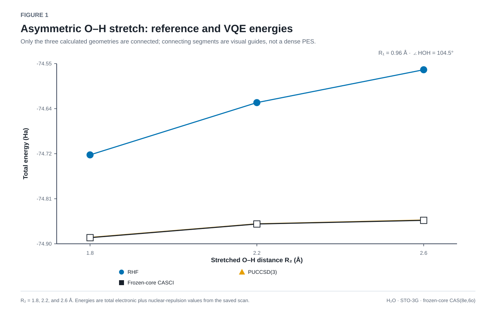
FIGURE 1. Asymmetric O–H stretch: reference and VQE energies R₂ = 1.8, 2.2, and 2.6 Å. Energies are total electronic plus nuclear-repulsion values from the saved scan.
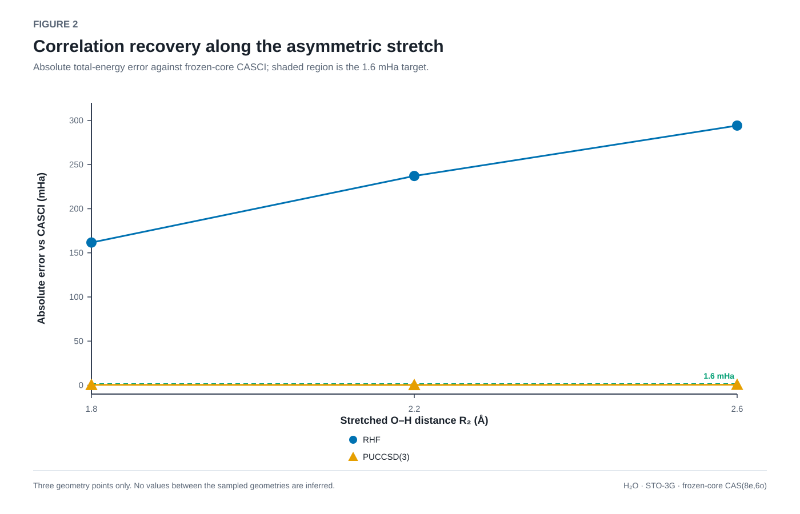
FIGURE 2. Correlation recovery along the asymmetric stretch Three geometry points only. No values between the sampled geometries are inferred.
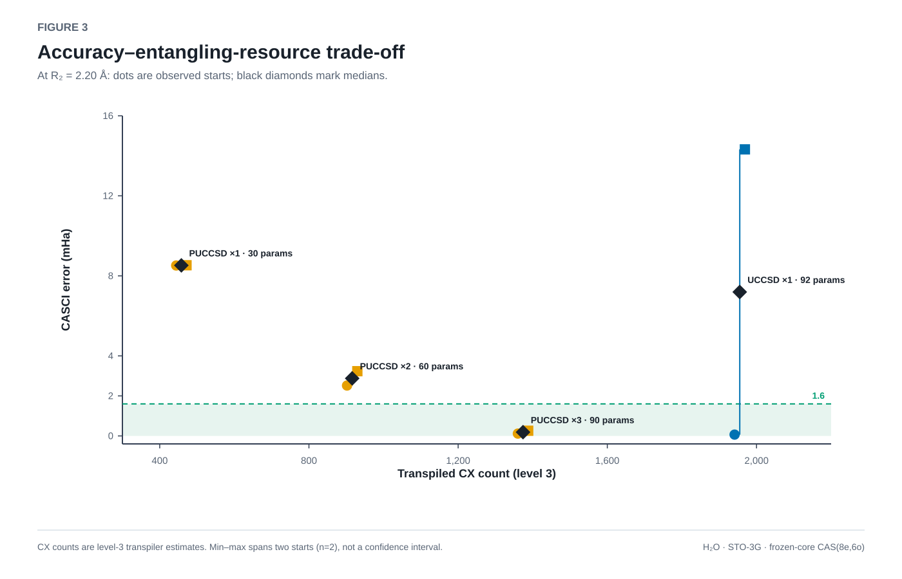
FIGURE 3. Accuracy–entangling-resource trade-off CX counts are level-3 transpiler estimates. Min–max spans two starts (n=2), not a confidence interval.
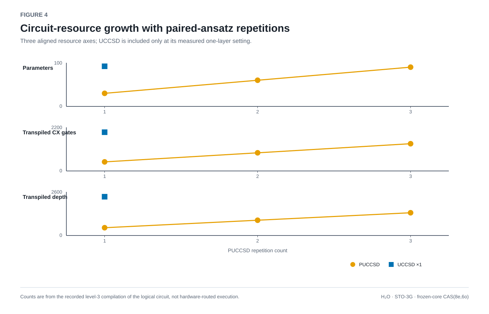
FIGURE 4. Circuit-resource growth with paired-ansatz repetitions Counts are from the recorded level-3 compilation of the logical circuit, not hardware-routed execution.
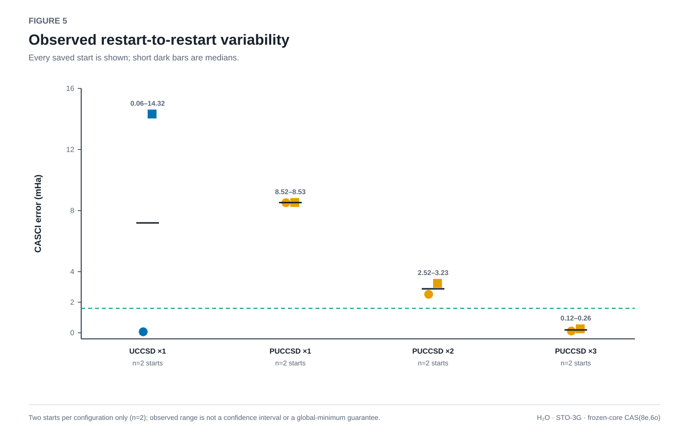
FIGURE 5. Observed restart-to-restart variability Two starts per configuration only (n=2); observed range is not a confidence interval or a global-minimum guarantee.
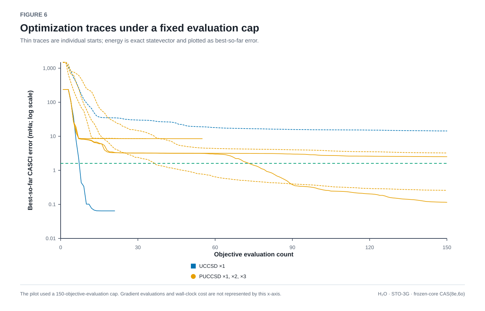
FIGURE 6. Optimization traces under a fixed evaluation cap The pilot used a 150-objective-evaluation cap. Gradient evaluations and wall-clock cost are not represented by this x-axis.
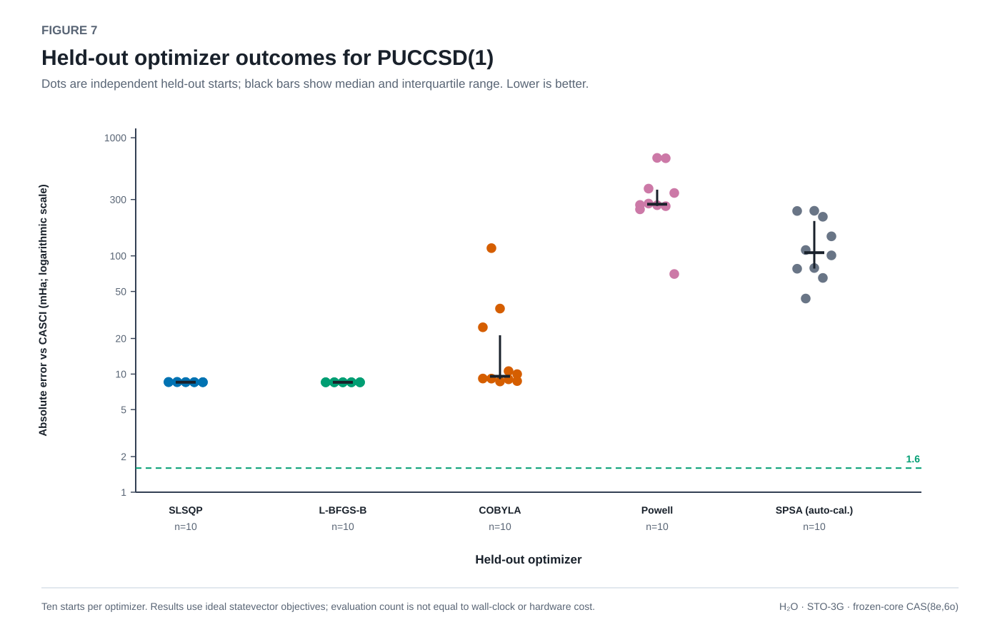
FIGURE 7. Held-out optimizer outcomes for PUCCSD(1) Ten starts per optimizer. Results use ideal statevector objectives; evaluation count is not equal to wall-clock or hardware cost.
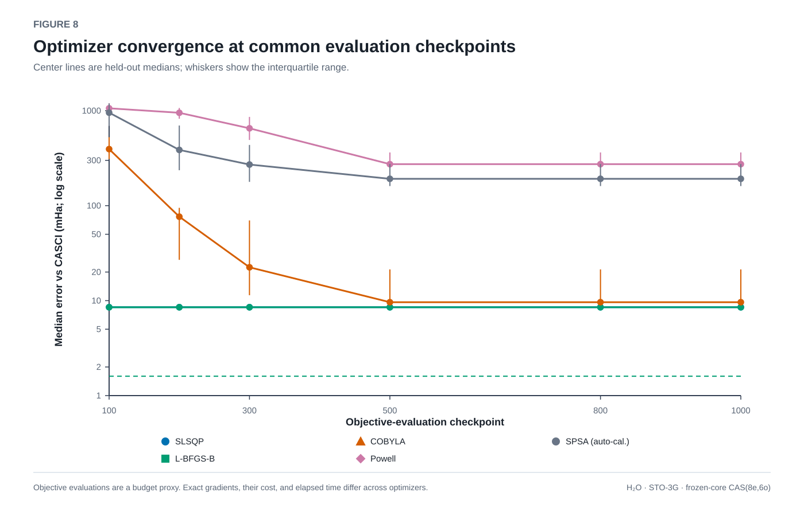
FIGURE 8. Optimizer convergence at common evaluation checkpoints Objective evaluations are a budget proxy. Exact gradients, their cost, and elapsed time differ across optimizers.
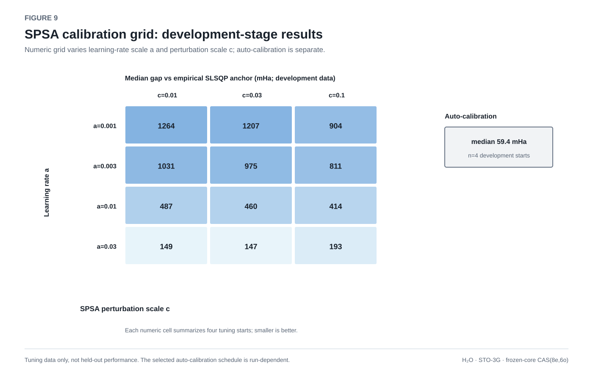
FIGURE 9. SPSA calibration grid: development-stage results Tuning data only, not held-out performance. The selected auto-calibration schedule is run-dependent.
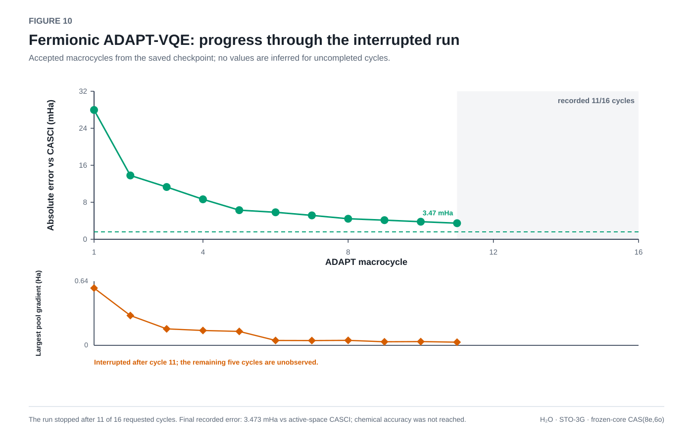
FIGURE 10. Fermionic ADAPT-VQE: progress through the interrupted run The run stopped after 11 of 16 requested cycles. Final recorded error: 3.473 mHa vs active-space CASCI; chemical accuracy was not reached.
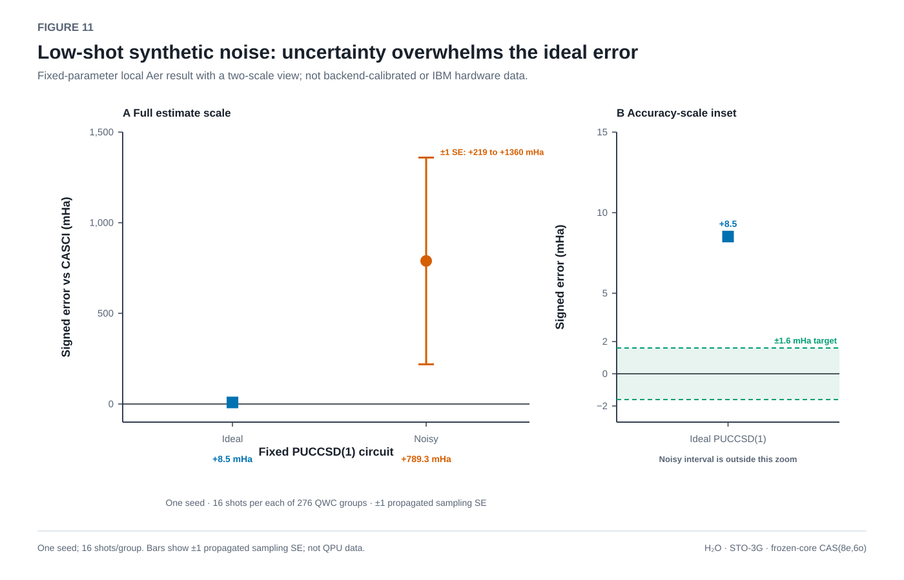
FIGURE 11. Low-shot synthetic noise: uncertainty overwhelms the ideal error PUCCSD(1), 10 mapped qubits; 4,416 shots total. Synthetic noise p₁=10⁻⁴, p₂=10⁻³, symmetric readout flip=1%. Noisy estimate error +789.3 mHa ±570.4 mHa (one propagated sampling SE, one seed); this is too imprecise to support a chemical-accuracy claim.